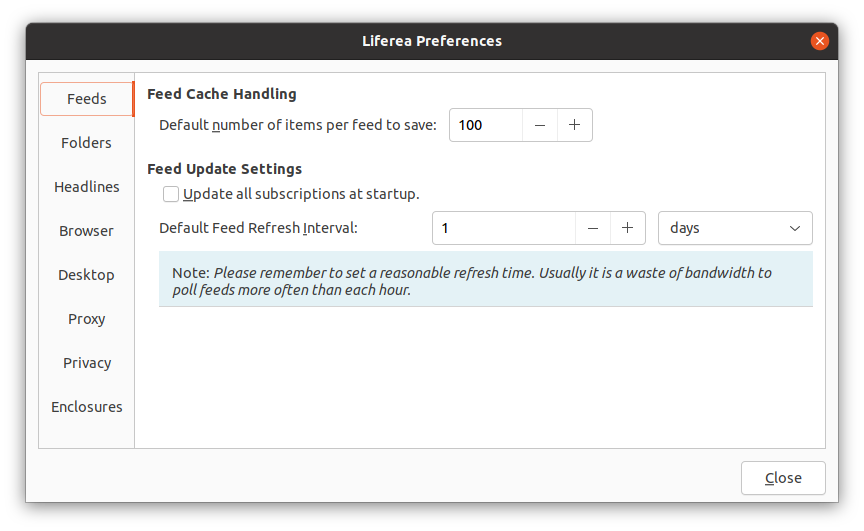
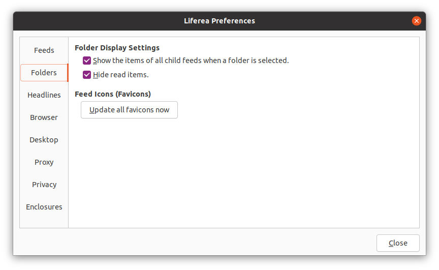
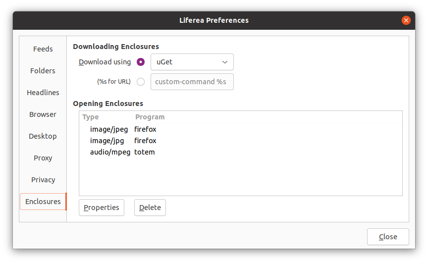

Modificare le Preferenze
La finestra delle preferenze può essere aperta dalla barra degli strumenti o tramite il menu "Strumenti". La finestra è suddivisa in sette schede di seguito descritte.
Preferenze dei Notiziari

- Gestione della Cache del Notiziario: Qui puoi impostare il numero predefinito di oggetti da salvare per tutti gli abbonamenti. Nota che questo settaggio può essere sovrascritto per ciascun abbonamento impostando la dimensione della memoria degli oggetti nelle proprietà degli abbonamenti.
-
Impostazioni di Aggiornamento del Notiziario: Qui puoi impostare
l'intervallo di aggiornamento predefinito per tutti gli abbonamenti. Nota che
questo settaggio può essere sovrascritto per ciascun abbonamento impostando
l'intervallo nelle proprietà degli abbonamenti.
La casella di controllo "Aggiornare tutti gli abbonamenti all'avvio" ti permette di controllare il comportamento dell'aggiornamento dubito dopo l'avvio.
Preferenze delle Cartelle

-
Impostazioni Visualizzazione delle Cartelle: Tramite queste caselle di controllo puoi controllare cosa carica Liferea nella lista degli oggetti quando clicchi una cartella. Il comportamento predefinito è di caricare tutti gli oggetti non letti e di nascondere tutti gli oggetti che hai già letto.
In genere vorrai abilitare entrambe le opzioni poiché ciò consente di leggere rapidamente tutti gli oggetti di un insieme di notiziari.
- Icone dei Notiziari (Favicons): Questo pulsante ti permette di innescare un aggiornamento di tutte le favicons di tutti gli abbonamenti.
Preferenze dei Titoli

- Lettura Titoli: Qui puoi impostare la combinazione di scelta rapida per scorrere attraverso tutti i titoli non letti.
- Modalità Predefinita di Visualizzazione: Scegli qui la tua modalità di visualizzazione preferita.
- Integrazione Web: Qui puoi configurare il tuo sito web di social bookmarking. Questo settaggio viene utilizzato quando scegli "Segnalibro su …" dal menu contestuale dell'oggetto o dalla visualizzazione HTML (il browser integrato).
Preferenze del Browser

- Impostazioni del Browser Interno: Qui puoi configurare tre cose. Primo, puoi specificare se Liferea dovrebbe aprire i collegamenti cliccati nel browser esterno configurato oppure nel browser interno. La seconda opzione ti permette di disattivare JavaScript. La terza opzione ti permette di abilitare i plugin del browser.
-
Impostazioni del Browser Esterno: Quando clicchi i collegamenti in un
articolo che leggi, Liferea lancia un comando per eseguire il browser, che
puoi definire con queste impostazioni. Il primo menu serve a far utilizzare
il tuo browser web preferito e se è su "Manuale" viene eseguito un comando
definito dall'utente. Con il secondo menu specifichi come il collegamento
viene aperto nel browser precedentemente selezionato.
Solo quando scegli "Manuale" come browser puoi inserire un comando del browser nella casella Manuale. Quando inserisci un comando non dimenticare di includere un "%s" al suo interno, che sarà sostituito con l'URL che viene cliccato. Ricorda di virgolettare il segnaposto per evitare malfunzionamenti della shell con il carattere cancelletto (#, usato negli URL) durante l'avvio del browser.
Preferenze della Scrivania

- Impostazioni Barra degli Strumenti: Qui puoi decidere se vuoi mostrare sia la barra dei menu che quella degli strumenti o solo una di esse. In aggiunta si possono influenzare i dettagli dei pulsanti della barra degli strumenti.
- Altro: Qui puoi decidere se vuoi ricevere una conferma di sicurezza quando marchi tutti gli oggetti come letti.
Preferenze del Proxy

-
Server Proxy HTTP: Qui puoi specificare come Liferea
dovrebbe determinare la configurazione del proxy. La configurazione
predefinita suggerita è di settare tutto automaticamente dalle variabili
d'ambiente e dalla configurazione di GNOME.
Se Liferea individua il proxy erroneamente o se se vuoi configurare un proxy differente allora dovresti usare le opzioni "Nessun Proxy" o "Impostazione Manuale".
Attualmente non c'è alcun supporto diretto a SOCKS. Per usare un proxy SOCKS usa "Rilevare Automaticamente" e configura globalmente il tuo ambiente desktop (GNOME, KDE...) per utilizzare SOCKS!
Preferenze degli Allegati

Questa scheda ti permette di configurare come Liferea dovrebbe gestire gli allegati. Se sei ancora incerto su cosa siano gli allegati per piacere leggi prima la sezione Allegati/Podcasting.
-
Scaricamento Allegati: Qui specifichi quale strumenti di download
dovrebbe essere utilizzato da Liferea.
Quando hai problemi nello scaricare gli allegati per piacere assicurati di aver già installato lo strumento di download specificato e che sia correttamente funzionante quando lo esegui da linea di comando. - Apertura Allegati: Usando i pulsanti "Proprietà" e "Elimina" puoi editare la lista dei tipi di allegato conosciuti. In genere desidererai farlo solo per rimuovere o cambiare le associazioni dei programmi. Non hai bisogno di creare queste definizioni manualmente perché Liferea ne creerà una nuova quando apri o salvi un certo tipo di allegato e ti chiederà quale programma utilizzare.